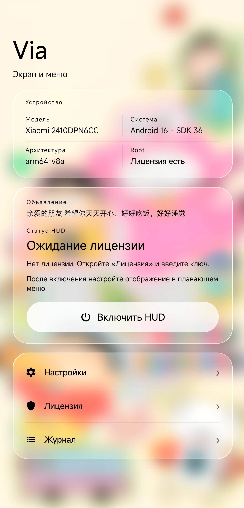

Game first, layer second
The test layer appears only after the game is in the foreground. No extra game process, no focus stealing.
Gameforegroundtest layer
Via is a display layer for authorized game compatibility and stability testing. It keeps the interface quiet and supports English, 中文 and Русский.
This page describes the interface and the test boundaries, not the internals. The layer stays quiet; the test stays authorized.
The test layer appears only after the game is in the foreground. No extra game process, no focus stealing.
A short check confirms the authorized test environment before the layer appears. Internal paths and implementation details stay off this page.
The glass stays transparent over the wallpaper. No separate dark panel behind the cards.
Test state is kept on the device. The site has no account form and publishes no credentials.
The layout scales to resolution and DPI. No internal paths are shown.
English is the default on first launch; 中文 and Русский use the same layout.
English, Chinese and Russian on the same device. One layout, three language layers.

The first screen is a language picker. English is selected by default; the choice is stored locally and survives restarts. The same three labels are used across the interface.
This is the public page for the test program. It describes the interface and what stays private: internal paths, account credentials and implementation details.
Scope and operating notes, not implementation detail.
Internal paths, account credentials and implementation details.
A display layer for authorized game compatibility and stability testing.
Yes. System-level display features depend on root. The app reports the device state on the home card.
No. It only draws a display layer; game content is untouched.
No. The site has no login, no account form and no credential fields.
Settings → Interface settings → Language. The interface follows the new language.
A first launch starts in English; the picker then offers 中文 and Русский. The choice is remembered.